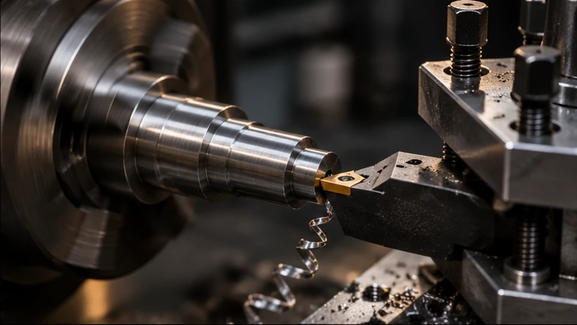
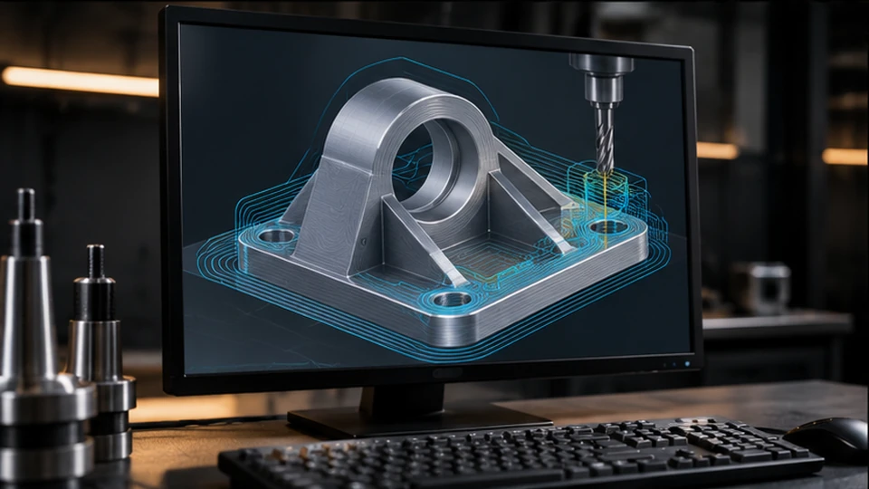
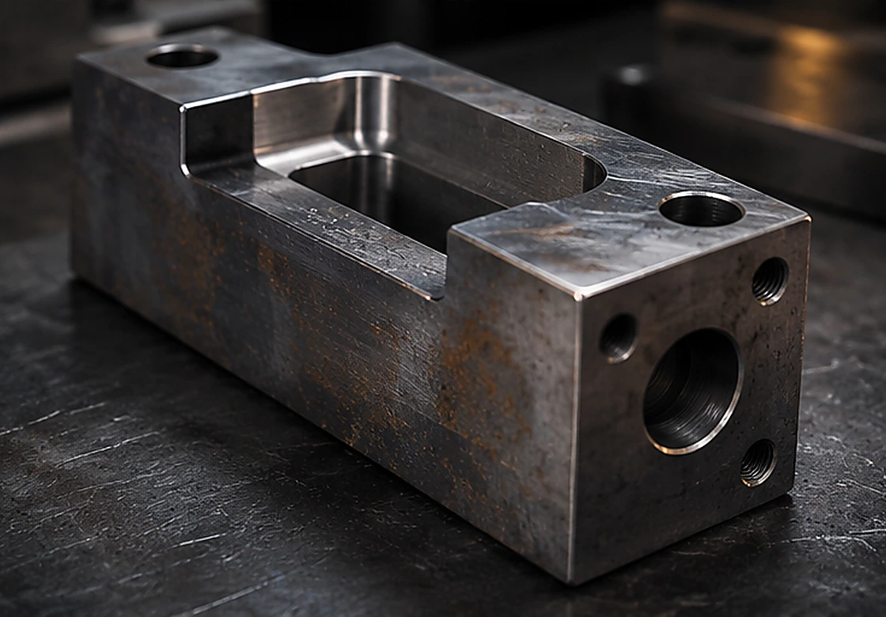
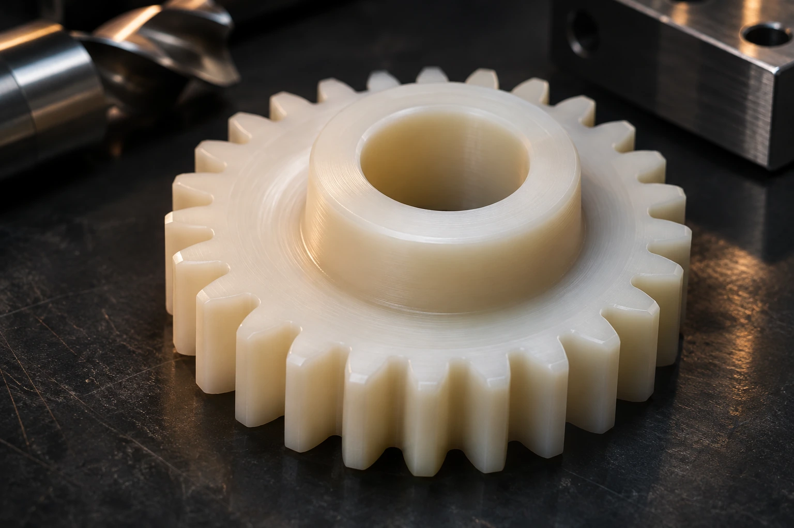
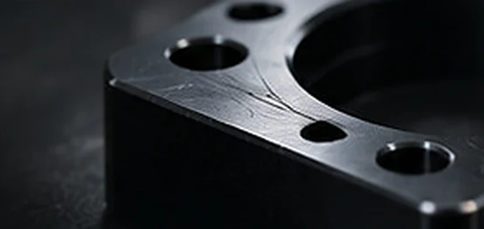
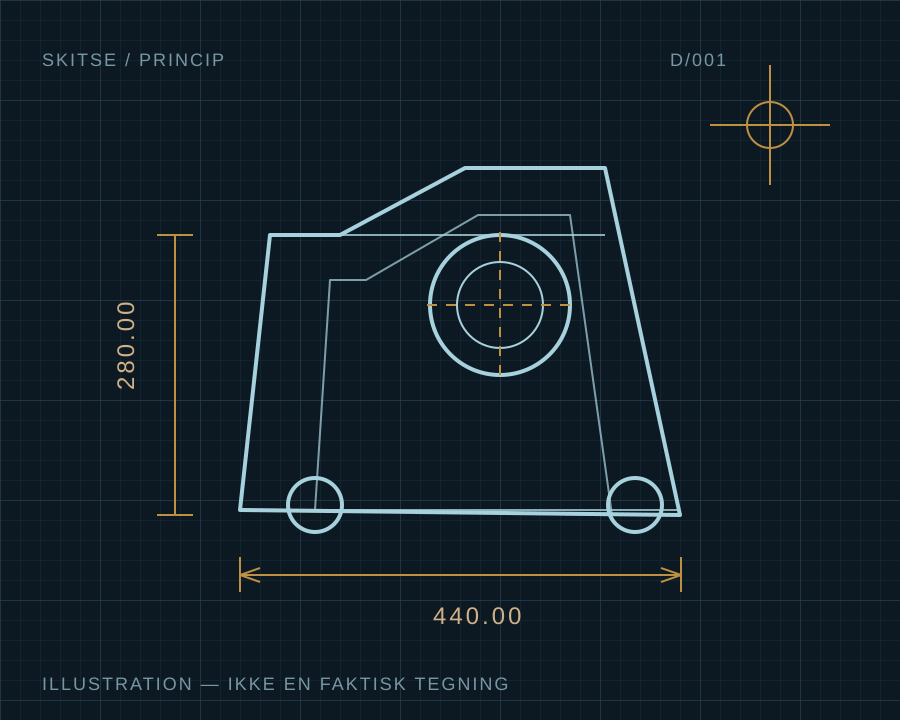
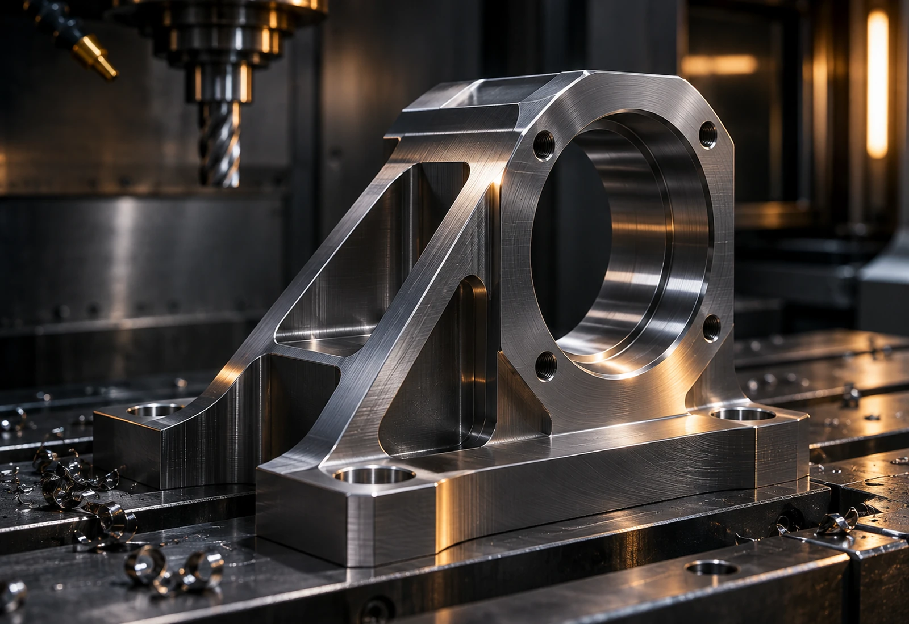
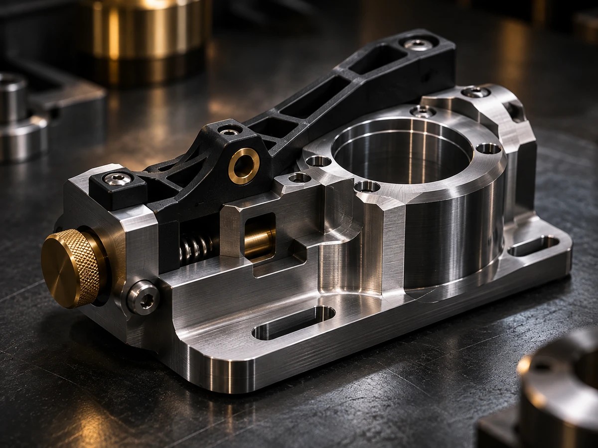

MANUEL
BEARBEJDNING
Fræsning og drejning
PERSONLIGT PROJEKT / FINMEKANIK / PROTOTYPER
En del, der er gået i stykker? Et teknisk problem uden en oplagt løsning? Fortæl mig om udfordringen — så undersøger vi mulighederne.
02 / KOMPETENCER
Traditionelt håndværk, moderne maskiner og digital udvikling. Jeg vælger metode efter opgaven — ikke omvendt.

Fræsning og drejning

Præcision og fleksibilitet

Design og værktøjsbaner

Pasform og prototyper

Undersøgelse og tilpasning
03 / MATERIALER
Det rigtige materiale skal passe til funktionen. Her er dem, jeg især arbejder med — fra metaller til teknisk plast.


ØVRIGE MATERIALER





3D-PRINTMATERIALER
FDM til formstudier, pasformsprøver og funktionelle testemner.
04 / MIN TILGANG
Jeg begynder med at forstå udfordringen, undersøge mulighederne og afprøve, hvad der kan lade sig gøre.
Hvad er sket, og hvad skal fungere?

Hvilke løsninger er realistiske?

Test, tilpasning og en brugbar løsning.
ILLUSTRATIVE VISUALISERINGER — IKKE DOKUMENTEREDE KUNDEPROJEKTER

05 / OM DATUM
Datum Prototyping er mit personlige projekt. Jeg er finmekaniker under uddannelse og brænder især for prototyper, præcision og tekniske problemer, hvor løsningen ikke ligger lige for.
Jeg har endnu ikke mit eget værksted. Her viser jeg min tilgang til håndværket og min interesse for at undersøge, udvikle og forbedre.
06 / KONTAKT
Har du en idé, en defekt del eller en udfordring, du gerne vil vende? Du behøver ikke have alle mål eller en færdig CAD-model.